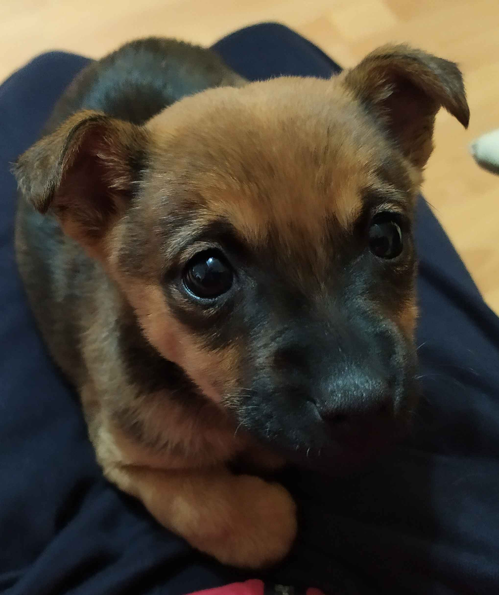

---
# Feel free to add content and custom Front Matter to this file.
# To modify the layout, see https://jekyllrb.com/docs/themes/#overriding-theme-defaults

layout: main
---
<div class="front-container">
    <div class="titles">
        <h2 class="first-dog-name">Аз съм Морти</h2>
        <h2 class="second-dog-name">Аз съм Майки</h2>
    </div>
    
    
    
    <div class="container-images">
        <ul class="front-gallery">
            <li><a href=""></a></li>
            <li class="maiki"><a href=""></a></li>
    
        </ul>
    </div>
</div>

